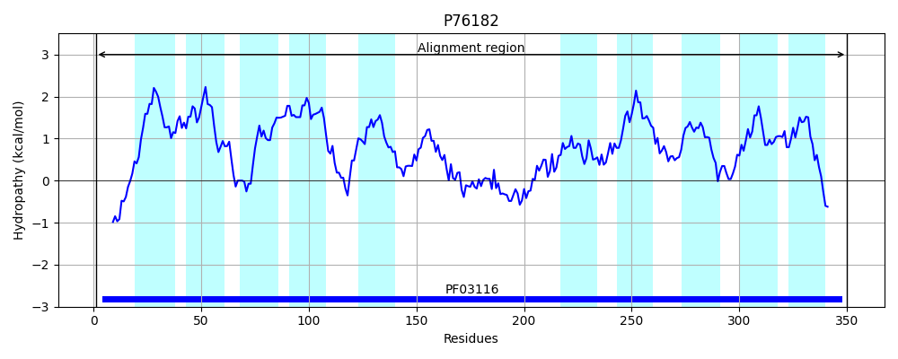
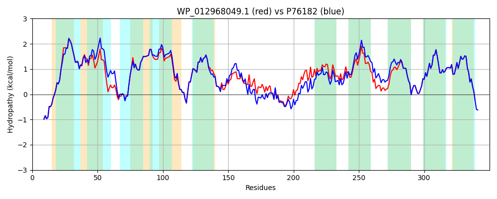

Hit Accession: P76182
Hit TCID: 3.D.6.1.4
Hit Description: gnl|BL_ORD_ID|11444 gnl|TC-DB|P76182|3.D.6.1.4 Electron transport complex subunit RsxD OS=Escherichia coli (strain K12) GN=rsxD PE=1 SV=1
Mach Len: 350
e:0.000000
Query TMS Count : 10
Hit TMS Count: 10
TMS-Overlap Score: 8.050000
Predicted Substrates:CHEBI:5584;hydron
BLAST Alignment:
Score: 1588 , Bit scores: 616 bits, E-value: 0.0e+00, Alignment length: 350, Percentage identity: 84
Query: 1 MVFRIASSPYTHNQRQTSRIMLLVLLAAVPGIVVQTWFFGWGTVLQIVLAALTAWATEAAILKLRKQHIVATLKDNSALLTGLLLAVSIPPLAPWWMVVLGTAFAVVIAKQLYGGLGHNPFNPAMIGYVVLLISFPVQMTSWLPSYEIAAQVPAFSDVLQMIFTGHTAAGGDMASLRLGIDGISQATPLDTFKTSLHAGHSVQQVLQLPVYGGVLAGLGWQWVNIAWLAGGLFLLWQKAIRWHIPVSFLVSLGLCATLGWLFSPQSLASPQMHLFSGATMLGAFFILTDPVTASTTNRGRLIFGALAGLLVWLIRSFGGYPDGVAFAVLLANITVPLIDYYTRPRVYGHR 350
MVFRIASSPYTHNQRQTSRIMLLVLLAAVPGI Q WFFGWGT++QI+LA+++A EA +LKLRKQ + ATLKDNSALLTGLLLAVSIPPLAPWWMVVLGT FAV+IAKQLYGGLG NPFNPAMIGYVVLLISFPVQMTSWLP +EIA +P F D +Q+IF+GHTA+GGDM +LRLGIDGISQATPLDTFKTS+ AGHSV+Q++Q P+Y G+LAG GWQWVN+AWLAGG++LLWQKAIRWHIP+SFLV+L LCA LGWLFSP++LA+PQ+HL SGATMLGAFFILTDPVTASTTNRGRLIFGALAGLLVWLIRSFGGYPDGVAFAVLLANITVPLIDYYTRPRVYGHR
Sbjct: 1 MVFRIASSPYTHNQRQTSRIMLLVLLAAVPGIAAQLWFFGWGTLVQILLASVSALLAEALVLKLRKQSVAATLKDNSALLTGLLLAVSIPPLAPWWMVVLGTVFAVIIAKQLYGGLGQNPFNPAMIGYVVLLISFPVQMTSWLPPHEIAVNIPGFIDAIQVIFSGHTASGGDMNTLRLGIDGISQATPLDTFKTSVRAGHSVEQIMQYPIYSGILAGAGWQWVNLAWLAGGVWLLWQKAIRWHIPLSFLVTLALCAMLGWLFSPETLAAPQIHLLSGATMLGAFFILTDPVTASTTNRGRLIFGALAGLLVWLIRSFGGYPDGVAFAVLLANITVPLIDYYTRPRVYGHR 350 | Protein Hydropathy Plots: |
|---|
 |  |
Pairwise Alignment-Hydropathy Plot:
|
|---|
|  |